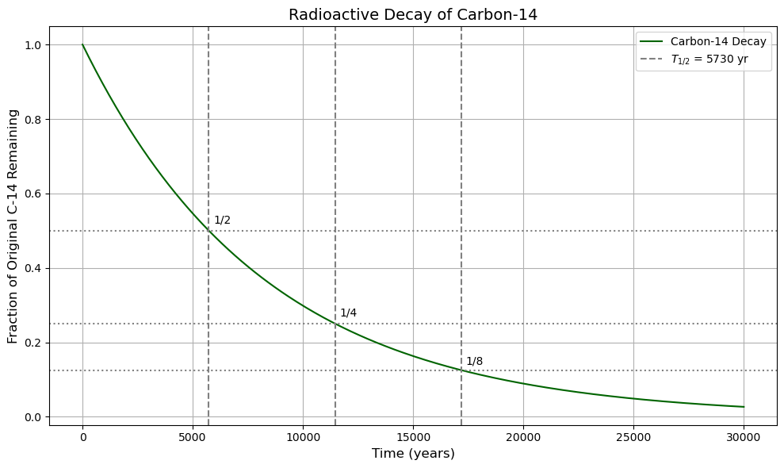

C8.6 Radioactivity and Nuclear Stability#
C8.6.1 Motivation#
Not all nuclei are stable. Some spontaneously transform into other nuclei, releasing particles and energy—a process known as radioactivity.
Radioactive decay is not only a fascinating consequence of quantum physics, but also has profound implications in:
Medical imaging and cancer treatment (radioisotopes, PET scans)
Radiometric dating (carbon dating, uranium-lead dating)
Nuclear power and weaponry
Fundamental physics (neutrino studies, weak interaction)
To understand radioactivity, we must explore what makes a nucleus stable or unstable, how unstable nuclei decay, and what rules govern these transformations.
C8.6.2 Nuclear Stability#
The Valley of Stability#
As seen earlier, stable nuclei lie along a band in the \((Z, N)\) chart.
For light nuclei, stability is found near \(N = Z\)
For heavy nuclei, stability requires \(N > Z\) due to increasing proton repulsion
Nuclei outside this valley are unstable and undergo decay to move closer to stability
C8.6.3 Types of Radioactive Decay#
Alpha Decay (\(\alpha\))#
Occurs in heavy nuclei (\(A > 200\))
Emission of an alpha particle: \(^4_2\text{He}\) nucleus
Reduces both \(Z\) and \(A\):
\[ {}^A_Z\text{X} \rightarrow {}^{A-4}_{Z-2}\text{Y} + \alpha \]
Beta Decay (\(\beta\))#
(a) Beta-minus (\(\beta^-\))#
A neutron converts to a proton, emitting an electron and antineutrino:
\[ n \rightarrow p + e^- + \bar{\nu}_e \]In nuclei:
\[ {}^A_Z\text{X} \rightarrow {}^A_{Z+1}\text{Y} + e^- + \bar{\nu}_e \]
(b) Beta-plus (\(\beta^+\)) or Positron Emission#
A proton converts to a neutron, emitting a positron and neutrino:
\[ p \rightarrow n + e^+ + \nu_e \]In nuclei:
\[ {}^A_Z\text{X} \rightarrow {}^A_{Z-1}\text{Y} + e^+ + \nu_e \]
(c) Electron Capture (EC)#
A proton in the nucleus captures an inner electron:
\[ p + e^- \rightarrow n + \nu_e \]Reduces \(Z\) by 1 (similar to \(\beta^+\) decay)
Gamma Decay (\(\gamma\))#
Emission of high-energy photon (\(\gamma\) ray)
Occurs after other decay leaves the nucleus in an excited state
No change in \(Z\) or \(A\):
\[ {}^A_Z\text{X}^* \rightarrow {}^A_Z\text{X} + \gamma \]
C8.6.4 Decay Law and Half-Life#
The Randomness of Decay#
Radioactive decay is a stochastic (random) process:
We cannot predict when a particular unstable nucleus will decay.
But we can predict the probability that it will decay within a given time interval.
This probability is constant in time, meaning it does not depend on how old the nucleus is.
This leads to exponential decay at the population level.
Derivation of the Exponential Decay Law#
We assume that the rate of decay of a radioactive sample is proportional to the number of undecayed nuclei at time \(t\):
Where:
\(N(t)\) is the number of undecayed nuclei at time \(t\)
\(\lambda\) is the decay constant (probability of decay per unit time)
The minus sign indicates that \(N(t)\) decreases with time
Step 1: Separate Variables#
Step 2: Integrate Both Sides#
Integrating from \(t = 0\) to \(t\) and from \(N_0\) to \(N(t)\):
Step 3: Solve for \(N(t)\)#
Therefore:
This is the exponential decay law, showing how the number of undecayed nuclei drops over time.
Decay and Activity#
The activity \(A(t)\) is the number of decays per second:
\[ A(t) = -\frac{dN}{dt} = \lambda N(t) \]The initial activity is \(A_0 = \lambda N_0\)
Activity decreases at the same exponential rate
Half-Life#
The half-life \(T_{1/2}\) is the time it takes for half the original nuclei to decay:
Plugging into the decay law:
Taking the logarithm:
Mean Lifetime#
The mean lifetime \(\tau\) is the average time a nucleus survives before decaying:
It is related to the half-life by:
Key Equations#
Quantity |
Symbol |
Units |
Formula |
|---|---|---|---|
Decay constant |
\(\lambda\) |
\(\text{s}^{-1}\) |
\(\lambda = \frac{\ln 2}{T_{1/2}}\) |
Half-life |
\(T_{1/2}\) |
seconds, years |
\(T_{1/2} = \frac{\ln 2}{\lambda}\) |
Mean lifetime |
\(\tau\) |
seconds |
\(\tau = \frac{1}{\lambda}\) |
Number remaining |
\(N(t)\) |
unitless |
\(N(t) = N_0 e^{-\lambda t}\) |
Activity |
\(A(t)\) |
decays/s (Bq) |
\(A(t) = \lambda N(t)\) |
Superposition of Decays#
In real materials, multiple isotopes may decay simultaneously. The total activity is:
This becomes important in:
Nuclear reactors
Decay chains
Radiopharmaceuticals
C8.6.5 Example: Carbon-14 Decay Curve#
Carbon-14 (\(^{14}\)C) is a radioactive isotope used extensively in radiocarbon dating of organic materials. It is continuously produced in the atmosphere and incorporated into living organisms, where it maintains a constant ratio with the stable isotope carbon-12 (\(^{12}\)C). When an organism dies, it stops absorbing carbon, and the \(^{14}\)C it contains begins to decay via \(\beta^-\) emission with a half-life of approximately 5730 years. Meanwhile, \(^{12}\)C remains constant. By measuring the ratio of \(^{14}\)C to \(^{12}\)C in a sample and comparing it to the atmospheric ratio, scientists can determine how long it has been since the organism died. The decay curve below shows how the fraction of remaining \(^{14}\)C decreases exponentially over time. After one half-life, only half of the original \(^{14}\)C remains. After two half-lives, a quarter remains, and so on. For example, if a sample retains only 12.5% of its original \(^{14}\)C, it has undergone three half-lives, corresponding to an age of roughly 17,190 years.

C8.6.6 Why Nuclei Decay#
Nuclear decay occurs when:
The binding energy of daughter nuclei is greater (more stable)
Mass-energy of the initial nucleus is higher than the sum of final products
The decay is allowed by conservation laws:
Energy
Momentum
Angular momentum
Charge
Lepton and baryon number
Quantum tunneling also plays a role, especially in alpha decay.
C8.6.7 Radioactive Series#
Some unstable isotopes decay through multiple steps, forming a decay chain, e.g.:
Uranium-238 series:
\[ {}^{238}_{92}\text{U} \rightarrow \ldots \rightarrow {}^{206}_{82}\text{Pb} \]
This process can involve all types of decay (alpha, beta, gamma) until a stable nucleus is reached.
C8.6.8 Stability Map Revisited#
In terms of decay direction:
Neutron-rich nuclei: undergo \(\beta^-\) decay to increase \(Z\)
Proton-rich nuclei: undergo \(\beta^+\) decay or electron capture to decrease \(Z\)
Very heavy nuclei: emit \(\alpha\) particles to reduce both \(Z\) and \(A\)
These motions all work to move nuclei toward the valley of stability.
C8.6.9 Summary#
Decay Type |
Change in \(Z\) |
Change in \(A\) |
Emitted Particles |
|---|---|---|---|
\(\alpha\) |
\(-2\) |
\(-4\) |
\(^4_2\text{He}\) nucleus |
\(\beta^-\) |
\(+1\) |
\(0\) |
\(e^-\), \(\bar{\nu}_e\) |
\(\beta^+\) |
\(-1\) |
\(0\) |
\(e^+\), \(\nu_e\) |
Electron Capture |
\(-1\) |
\(0\) |
\(\nu_e\) |
\(\gamma\) |
\(0\) |
\(0\) |
photon |